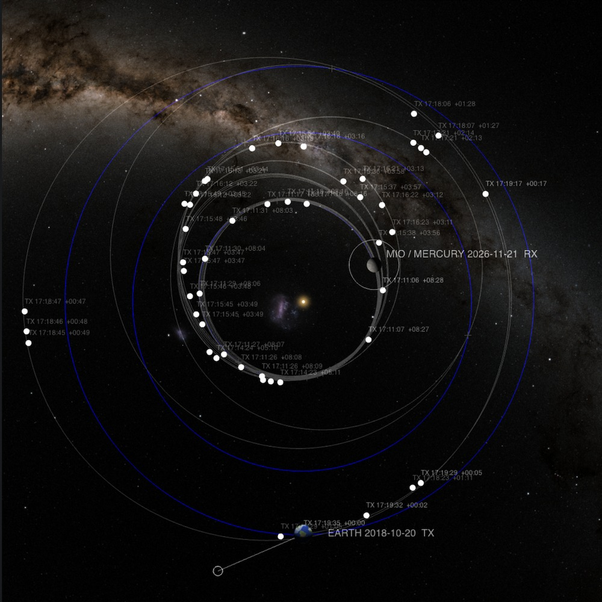

2026
mm web
2026
mm

2018年10月に地球から出発した水星磁気圏探査機「みお」は、地球・金星・水星のそばを合わせて9回通過しながら少しずつ軌道を変え、8年をかけて水星に到着します。
この作品では、画面に触れると音が鳴り、画面の中の地球から、ひとつの光の粒が出発します。粒は「みお」の実際の航跡を進み、8年間を8分29秒に縮めて、画面の中の水星に到着した時、同じ音が再び鳴ります。何本かの指で触れれば、和音になります。
8分29秒は、「みお」が水星に到着する2026年11月21日に、地球からの電波が探査機に届くまでの時間です。それだけの距離があります。
すべては画面上のイメージで、実際の探査機や水星に信号を送るものではありません。
画面は、太陽系を北側から見下ろしたかたちです。中心に太陽、中央下に打ち上げ時の地球、右上に到着時の水星が位置します。グレーの細い線が「みお」の実際の航跡、青い線が地球・金星・水星の軌道、＋がスイングバイ地点です。NASA/JPL Horizons System から取得した探査機の実際の軌道データを基にしており、2018年10月21日から水星周回軌道に入る2026年11月21日までの約2,954日分の軌跡となります。惑星の軌道と位置、スイングバイの地点も実際のデータから。背景画像も実際の南天の星空のデータ、星、天の川、大小マゼラン雲の位置と形は観測データに基づいています。
作品制作上の演出として加えたのは、向きの回転と時間の圧縮。図全体は、打ち上げ時の地球が手元に来るように回し、8年を509秒に縮めています（1秒が約5.8日）。そして、天体の大きさは誇張しています。画面の縮尺のままでは地球も水星も1ピクセルに満たないため、地球を約850倍、水星を約2,000倍に拡大し、太陽も実寸の約2倍です。地球は打ち上げ地のギアナ宇宙センターの側を向け、海岸線は実際の地形に基づいたイメージですが、地球の色や雲、水星の表面、太陽の光のにじみ等は創作です。
SOURCES & CREDITS
軌道データ：NASA/JPL Horizons System
天の川・大小マゼラン雲の背景：NASA/Goddard Space Flight Center Scientific Visualization Studio, Deep Star Maps 2020（Gaia DR2: ESA/Gaia/DPAC）。元画像を作品用に加工。
星の位置と明るさ：The Bright Star Catalogue, 5th Revised Edition (Preliminary Version)（Hoffleit & Warren, 1991; CDS V/50）
地球の海岸線：global-land-mask（NOAA GLOBE データに基づく）
太陽・地球・水星の画像：本作品のために生成
「みお」の運用情報：JAXA 公開資料